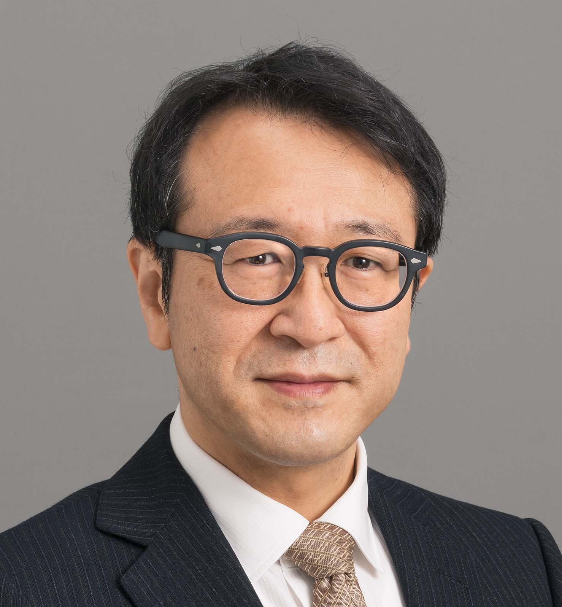

氏名：今井 倫太
所属・役職：慶應義塾大学 理工学部 教授
自己紹介
人とロボットのインタラクション (HRI) 研究を1991年より行っており、人工知能の最難関国際会議 IJCAI-99 に世界に先駆けて
“Physical Constraints on Human Roboto Interaction” というタイトルの発表を行い、HRI における身体表現の重要性を主張し注目されている。
さらに 2000 年に世界に先駆けて、人とコミュニケーションする研究用人型ロボット Robovie を開発し、世界に先駆けて
人とロボットのアイコンタクトがコミュニケーションに重要であることを示した論文が IEEE Transactions on Industrial Electronics
(2003, IF=7.5, 被引用件数 288, 2025 年 11 月時点) に掲載されている。
また、HRI 分野の最難関国際会議 ACM/IEEE HRI13 のプログラムチェア、HRI14 のジェネラルチェアを務め、
ACM/IEEE HRI のステアリングコミッティチェア (2021–2023) を務め、HRI 分野の国際的に取りまとめてきた。
さらに、肩に装着するコミュニケーションロボットの研究により人とコンピュータのインタラクションの最難関国際会議 CHI12 にて
Honorable Mention Note (全体のトップ 5%) を受賞すると共に、一連の HRI 研究の成果に対して、
ドコモモバイルサイエンス賞社会科学部門優秀賞 (2017 年) を受賞している。
1999 年に発表した、機器間を移動可能なパーソナルエージェント (エージェントマイグレーション) の研究 (ITACO システム) は、
効率良く人と機器の関係性を構築できるユーザインタフェースとして現在も世界中で研究されている。
近年は、大規模言語モデルを用いた心の理論の研究、実世界でのコミュニケーションロボット／エージェントの研究に着目している。
所属履歴
現在
- 慶應義塾大学 理工学部 教授 (2014.4 より)
- 慶應義塾大学 理工学部 情報工学科主任 (2024.4 より)
- ATR インタラクション科学研究所 客員研究員 (2019.10 より)
過去
- 2009.9–2010.9 シカゴ大学 客員研究員
- 2007.4–2014.3 同大学 准教授
- 2005.4–2007.3 同大学 助教授
- 2003.4–2005.3 同大学 専任講師
- 2002.10–2019.9 ATR 知能ロボティクス研究所 客員研究員
- 2002.4–2002.9 ATR メディア情報科学研究所 客員研究員
- 2002.4–2003.3 同大学 助手（有期）
- 2001.10–2002.4 ATR メディア情報科学研究所 研究員
- 1997.3–2001.9 ATR 知能映像通信研究所 研究員
- 1994.8–1997.3 NTT ヒューマンインターフェス研究所
- 1994.4–1994.7 日本電信電話株式会社
受賞
- 2017 ドコモモバイルサイエンス賞 社会科学部門優秀賞
- 2014 人工知能学会論文賞
- 2012 ACM CHI2012 Best Honorable Mention Notes
- 2012 ICAART2012 Best Paper Award
- 2010 優秀論文賞 (一般発表): 第 27 回ユビキタスコンピューティングシステム研究会
- 2009 IEEE/ACM HRI2009 Best Video Award
- 2008 情報処理学会 山内奨励賞 (表現の部)
- 2007 HAI シンポジウム 2007 Outstanding Research Award
- 2006 HAI シンポジウム 2006 Outstanding Research Award
- 2005 DICOMO2005 優秀論文賞
- 1999 人工知能学会全国大会優秀賞 1999 年度
学会等活動
- 2020.9–2022.9 HRI Steering Committee Co-chair
- 2018.12 HAI2018 General Co-chair
- 2015.8 IEEE RO-MAN 2015 PC Chair
- 2014.4–2016.3 電子情報通信学会クラウドネットワークロボット研究会 委員長
- 2014.3 IEEE/ACM HRI2014 General Co-chair
- 2013.3 IEEE/ACM HRI2013 PC Co-chair
大型研究プロジェクト
- 2019–2025 JST CREST 研究代表「文脈と解釈の同時推定に基づく相互理解コンピューテーションの実現」
- 2014–2019 新学術領域研究 認知的インタラクションデザイン学 C02 計画班代表
- 2009–2014 新学術領域研究 人ロボット共生学 A02-2 計画班代表
- 2002–2006 JST さきがけ「相互作用と賢さ」
評価委員
- 2025– JST CREST 共生 AI 学際システム アドバイザー
- 2017–2023 JST さきがけ「人とインタラクションの未来」アドバイザー
学歴
- 1992.3 慶應義塾大学 理工学部 電気工学科卒
- 1994.3 慶應義塾大学大学院 理工学研究科 計算機科学専攻 前期博士課程修了
- 2002.3 慶應義塾大学大学院 理工学研究科 開放環境科学専攻 コンピュータ科学専修 後期博士課程修了 博士（工学）
学位論文「ヒューマンロボットインタラクションにおける対話の場の生成の研究」
主査：安西祐一郎
研究テーマ
2024
- 印象文からの絵画生成の研究
- 顔画像を用いたパスワードの研究
2023
- 聞き逃しを支援できる文脈処理の研究
- 文章作成における LLM の効果の研究
- Meta-LLM を用いた旅行記作成ロボットの研究
2022
2021
2020
- 視覚言語用深層学習アーキテクチャの研究
- 書き換え可能な描画アーキテクチャの研究
- 任意の操作方法を学習する UI の研究
2018
2017
- 同期行動を利用できるカメレオン効果の研究
- 人間の作業負荷を考慮した協調ロボットの研究
- 機器に乗り移る精霊エージェントの研究
- 意図的行動と随伴行動を統合する仕組みの研究
- 人間の解釈レベルに合わせた強化学習の行動解釈の研究
2016
- テレプレゼンスロボットのための適応的聴覚フィルタリングの研究
- 電動走行車の適応的操作インタフェースの研究
2015
2014
- テレプレゼンスロボットのための聴覚環境の研究
- 肩乗りロボットを用いたバーチャル里帰り実験
2013
- ジェスチャによるロボットアーム制御の研究
- ソシオン理論を用いた関係性制御の研究
2012
2011
2010
2009
2008
- 道案内ロボットの反応時間の研究
- 搬送用ロボットのジェスチャの研究
2007
2006
- 取り付け型擬人化ロボットの研究（ディスプレイロボット）
2005
- セマンティックセンサーネットワークの研究
- 任意方向映像音声投影システム PLOT の研究
- 指示語を用いたヒューマンロボットインタラクションの研究
2004
2003
2000
1999
- コミュニケーションロボット Robovie の開発
1998
- マイグレートエージェントの研究（ITACO ロボット）
- 指示語を理解するロボットの研究
1997
1995
1993
研究業績
Keio University